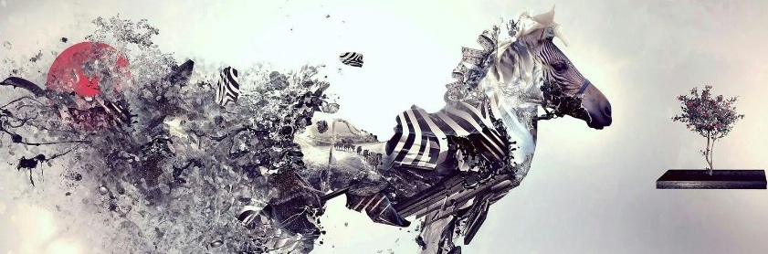
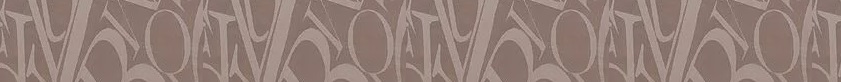
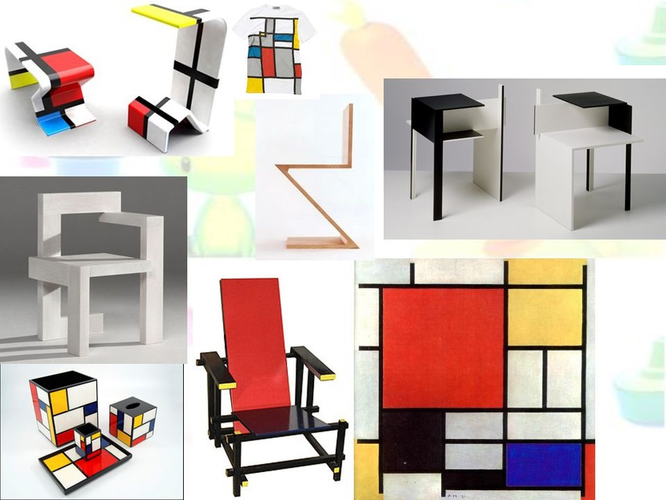
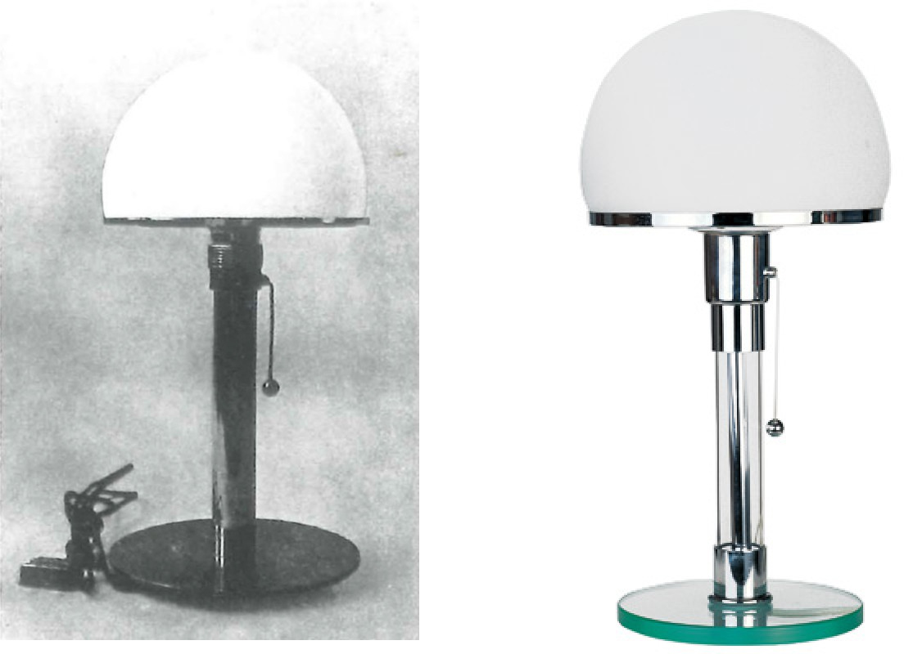
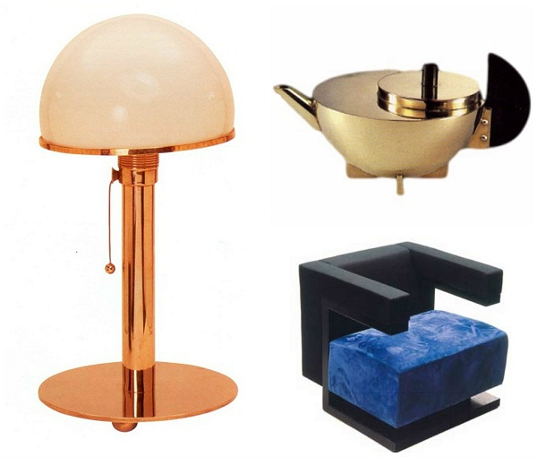

Компьютерный дизайн


Развитие дизайна
© Архипова Карина
г. Копейск, 2020 г.
В наше время общество испытывает период вмешательства рыночных отношений, при которых эстетическое качество предмета обязано соответствовать его значению и вытекать из него. Современные формы взаимодействия архитектуры и дизайна возникают из общих задач архитектурного проектирования и из условий строительного и промышленного производства. История дизайна неразрывно связана с эволюцией предметного окружения человека, историей развития техники и технологии.
Технический прогресс все больше входит в жизнь людей и начинает влиять на формирование их мировоззрение. К концу 18 века стало ясно, что без освоения новых технических форм и созданных промышленным способом вещей невозможен дальнейший прогресс. Однако стало заметное снижение качества индустриальных форм по сравнению с изделиями традиционного ремесленного производства, а также их инородность в окружающей среде. В середине 19 века понятия "искусство" и "художественное творчество" начинают употребляться по отношению к проектированию рядовых сооружений, созданию бытовых вещей и одежды.
Задача дизайна - план соответствия прелести и выгоды, фактор - сокращение эстетического степени в ходе многочисленного изготовления и пользования, модель - стилизация эстетического, основа - своеобразие элемента, отвечающая общепризнанным меркам и условиям стилизации.
Развитие нашего государства основало нам колоссальное число креативного наследства и креативных мыслей с целью осуществления. Однако с целью процветания нашей страны нужно совершенствовать общественно-цивилизованную область. В данной взаимосвязи отечественный дизайн содержит более немаловажное роль, несмотря на то в настоящее время уступает западным.


